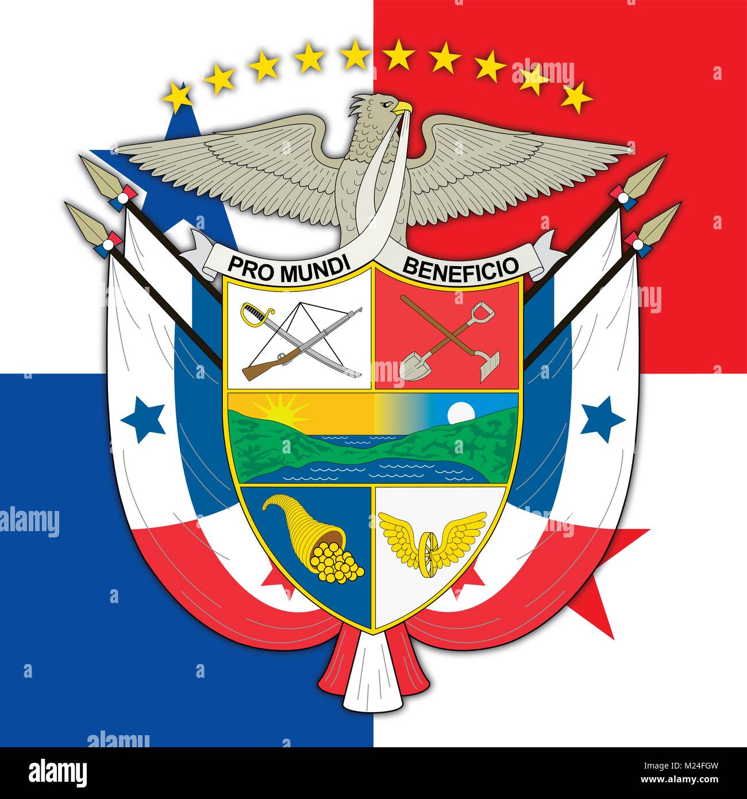
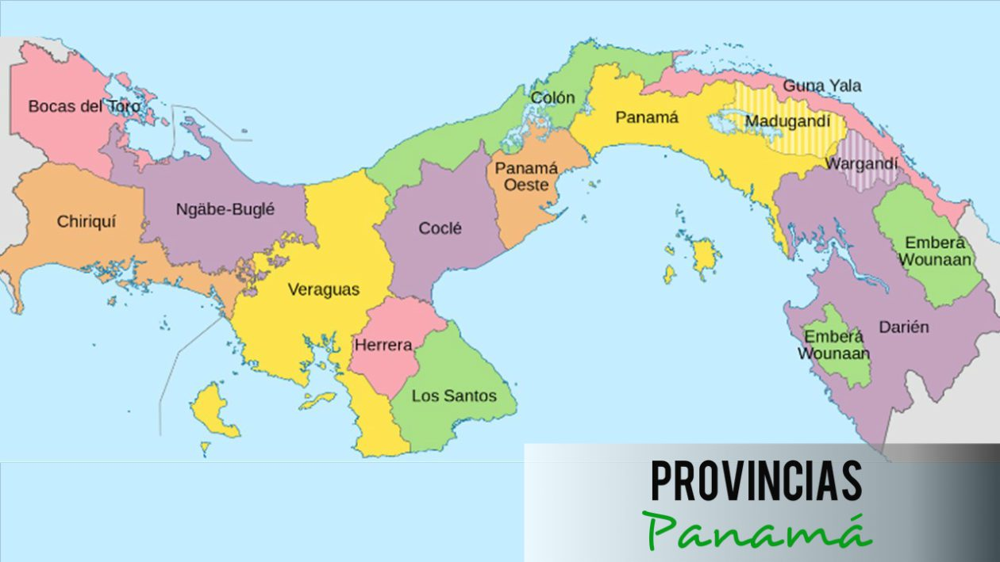

-
Simbolos Patrios
- Escudo
- Bandera
- Himno
l escudo de armas de la República de Panamá es el emblema heráldico que representa al país, y que junto con la bandera y el himno nacional, tiene la categoría de símbolo de la nación por mandato de la Ley
El color Blanco: representa el campo de la paz, para hacer patria en la nueva Nación. La estrella azul: simboliza la pureza y la honestidad que habrán de normar la vida cívica de la patria. La estrella roja: simboliza la autoridad y la ley que habrán de imponer el imperio de estas virtudes

CORO Alcanzamos por fin la victoria En el campo feliz de la unión; Con ardientes fulgores de gloria Se ilumina la nueva nación. ESTROFAS Es preciso cubrir con un velo Del pasado el calvario y la cruz; Y que adorne el azul de tu cielo De concordia la espléndida luz. El progreso acaricia tus lares. Al compás de sublime canción, Ves rugir a tus pies ambos mares Que dan rumbo a tu noble misión. (Coro) En tu suelo cubierto de flores A los besos del tibio terral, Terminaron guerreros fragores; Sólo reina el amor fraternal. Adelante la pica y la pala, Al trabajo sin más dilación, Y seremos así prez y gala De este mundo feraz de Colón.
-
Historia
a historia de Panamá abarca desde la llegada de sus primeros habitantes hasta la actualidad. Su historia se divide en cuatro grandes épocas: prehispánica, virreinal, colombiana y republicana. También se encuentran subperiodos como la conquista española, la independencia de Panamá del Imperio español, la separación de Panamá de Colombia, la dictadura militar en Panamá, y el regreso a la Democracia
-
Extension Territorial
Panamá, oficialmente República de Panamá, es un país ubicado en América Central. Su capital y ciudad más poblada es la Ciudad de Panamá. limita al norte con el mar Caribe, al sur con el océano Pacífico, al este con Colombia y al oeste con Costa Rica. Tiene una extensión de 75 517 km².1
 -
Provincias y Comarcas en Panamá
-
Bocas del Toro
-
Chiriquí
-
Coclé
-
Colón
-
Darién
-
Herrera
-
Los Santos
-
Panamá
-
Veraguas
-
Emberá-Wounaan
-
Kuna de Madugandí
-
Kuna Yala
-
Kuna de Wargandí
-
Ngöbe-Buglé
-
-
Lugares Turisticos
-
Panamá Viejo.
-
Calzada de Amador.
-
El Casco Antiguo
-
Punta Paitilla.
-
Cerro Ancón.
-
Parque Natural Metropolitano
-